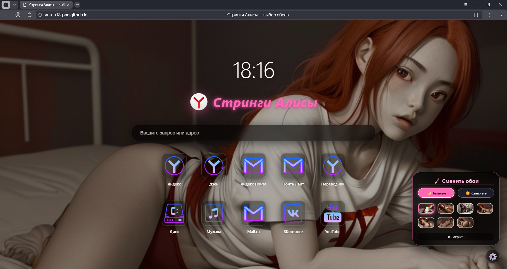

«Яндекс не узнает, что ты здесь был»
Полностью портативная версия Яндекс Браузера с отключением телеметрии, служб обновления и фоновой активности
Эта сборка — результат бескомпромиссной войны с телеметрией, фоновыми службами и скрытыми слежками Яндекс Браузера. Здесь нет ничего лишнего. Только браузер. Без докладов «наверх».
Полное отключение всех видов сбора данных. Яндекс не узнает, какие сайты вы посещаете.
После закрытия браузера не остаётся никаких следов — ни фоновых процессов, ни записей в реестре.
Удалены все обновления, проверки лицензий и фоновые задачи.
Сохранены Алиса, Нейроредактор, перевод видео и другие нейроинструменты.
Носить с собой на флешке. Работает на любом компьютере.
Блокировка всех телеметрических доменов через hosts, удаление служб Яндекс.
| Характеристика | Обычный Яндекс Браузер | Стринги Алисы |
|---|---|---|
| Телеметрия | ✅ Шлёт статистику | 🚫 Полностью заблокирована |
| Фоновая работа | ✅ Висит в фоне | 🚫 Убивается при закрытии |
| Обновления | ✅ Автоматические | 🚫 Вырваны с корнем |
| Службы в системе | ✅ Живут постоянно | 🚫 Удалены |
| metricsid | ✅ Уникальный ID | 🚫 Обнулён после каждого запуска |
| Скриншоты | ✅ Разрешены | 🚫 Отключены |
| Восстановление вкладок | ✅ Восстанавливает | 🚫 Сессии вычищаются |
| Портативность | ✅ Требует установки | ✅ Работает с флешки |
| Синхронизация | ✅ Работает | ✅ Работает (опционально) |
| Алиса / Нейросети | ✅ Работают | ✅ Работают (опционально) |
Скачайте и установите Яндекс Браузер с официального сайта: browser.yandex.ru
Почему это нужно? Сборка использует оригинальные файлы браузера.
Скачайте архив Alices-Thong.7z с раздела загрузки или с GitHub Releases.
https://github.com/anton18-png/Alices-thong/releases/download/v2.1/Alices-Thong.7zРаспакуйте архив в любую папку (например, C:\Apps\Alices-Thong\ или на флешку).
Запустите Install-Alices-Thong.bat или Install-Alices-Thong.exe
Браузер запустится автоматически. Теперь вы можете удалить оригинальный Яндекс Браузер — сборка работает независимо.

Интерфейс браузера Стринги Алисы — лёгкий и компактный
YandexBrowserService # Основная служба
YandexUpdaterService # Обновления
YaTransmgr # Транспортный менеджер
YandexProtectService # "Защита" (читай — слежка)
YandexDiskSync # Синхронизация с диском
YandexBrowserCrashHandler # Отправка крашейYandexUpdaterTask
YandexProtectTask
YandexBrowserUpdaterTask
YandexUpdateTaskMachineCore
YandexUpdateTaskMachineUA127.0.0.1 update.api.yandex.net # Обновления
127.0.0.1 events.yandex.net # События
127.0.0.1 metrics.yandex.com # Метрики
127.0.0.1 api-metrics.yandex.net # API метрик
127.0.0.1 browser-update.yandex.net # Обновления браузераHKLM\SOFTWARE\Policies\Yandex\YandexBrowser
BackgroundModeEnabled = 0 # Нет фона
ScreenshotsEnabled = 0 # Нет скриншотов
RestoreOnStartup = 4 # Новая вкладка
UpdateDefault = 0 # Нет обновлений
MetricsReportingEnabled = 0 # Нет метрик
SessionRestoreAutoRestore = 0 # Нет восстановления сессий--disable-background-mode # Запрет фоновой работы
--disable-features=Screenshots # Отключение скриншотов
--restore-on-startup=0 # Не восстанавливать вкладки
--disable-usage-statistics # Отключить статистику
--disable-crash-reporter # Отключить отправку крашей
--disable-metrics # Отключить метрики
--disable-sync # Отключить синхронизацию
--disable-rlz # Отключить маркетинговые метки| Пункт | Компонент | Что удаляется | Размер |
|---|---|---|---|
| 1 | 📡 Телеметрия | debug.log, eventlog_provider.dll, MEIPreload/, PrivacySandboxAttestationsPreloaded/ | ~5 МБ |
| 2 | 🔔 Уведомления | notification_helper.exe | ~3.5 МБ |
| 3 | ☁️ Синхронизация | IwaKeyDistribution/ | ~2 МБ |
| 4 | 🗣️ Алиса | alice_solver/, voiceactivation/, cspeechkit.dll | ~50 МБ |
| 5 | 🧠 Нейросети | neuroedit/, readability_ml/, video_translation/ | ~150 МБ |
| 6 | 📊 Виджеты | widgets/ | ~15 МБ |
| 7 | 🖼️ Иконки для пуска | VisualElements/ | ~0.5 МБ |
| 8 | 🔐 Подписи Яндекса | *.sig | ~2 МБ |
| 9 | 🛡️ Блокировщик рекламы | resources/easylist/ | ~50 МБ |
| 10 | 🎮 DirectX/Vulkan | d3dcompiler_47.dll, vulkan-1.dll и др. | ~50 МБ |
Скачайте архив с последней версией сборки
⭐ ЗВЕЗДА НА ГИТХАБЕ = УДАР ПО ТЕЛЕМЕТРИИ ЯНДЕКСА
Яндекс не узнает, что ты здесь был. Никогда.
Последнее обновление: Май 2026